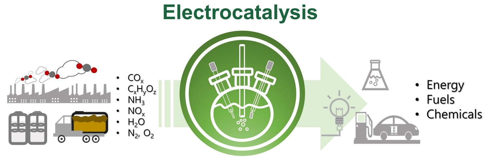
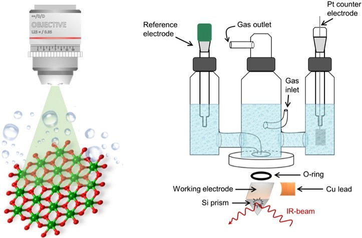
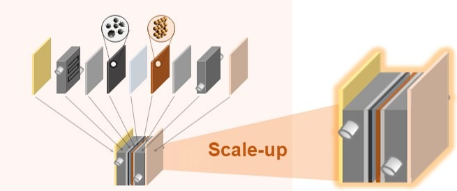

Green Hydrogen &
Sustainable Reactions
We design electrocatalytic reactions that use renewable electricity to produce hydrogen, fuels, and chemicals with improved activity, selectivity, and durability.
Electrocatalysts for hydrogen and oxygen evolution, including durable electrodes for high-current-density operation.
Electrochemical pathways toward C1 and multi-carbon products through catalyst and interface control.
Electrochemical conversion routes for fuels and chemicals beyond conventional thermochemical processes.


Operando Interfacial
Analysis
Electrochemical catalysts are dynamic under bias. We observe active interfaces in real time to identify reaction intermediates, surface reconstruction, and the origin of catalytic performance.
Direct monitoring of catalysts under realistic electrochemical conditions rather than only before and after reaction.
Raman, infrared, UV–Vis, and related in-situ approaches for tracking active species and interfacial structure.
Connecting spectral signatures with activity, selectivity, reconstruction, dissolution, and long-term stability.
Electrochemical
Systems
We translate catalyst-level understanding into practical electrochemical systems by integrating electrodes, cell architecture, transport, monitoring, and scale-up.
From catalyst layers and electrodes to cell architecture, operating conditions, and larger electrolysis formats.
Connecting material design with manufacturable electrode structures and device-level electrochemical performance.
Interface-sensitive evaluation strategies for electrolyzers, fuel cells, and broader electrochemical devices.

From fundamental insight to practical electrochemical engineering
Sustainable reactions and electrocatalysts.
Active interfaces under working conditions.
Mechanisms, active phases, and degradation.
Durable electrodes and electrochemical systems.